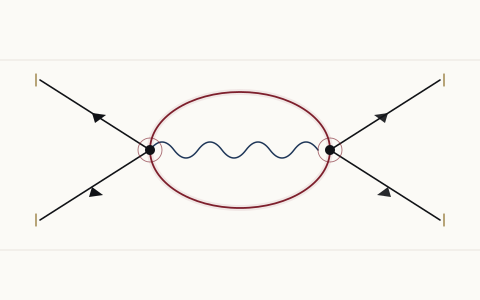
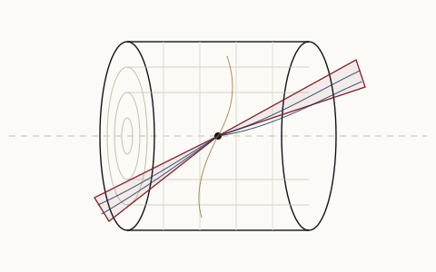

HEP@IITK
Research
The group's work spans three overlapping subgroups. Collaboration across them — theory feeding searches, experiment sharpening models — is actively encouraged.

Particle Theory
Model building beyond the Standard Model, effective field theory and precision calculations, together with the QCD, cosmology and flavour questions that connect them to data.
- Beyond Standard Model theory
- Effective field theory
- Precision physics
- Perturbative and non-perturbative QCD
- Cosmology & astroparticle physics
- Neutrino and flavour physics
- Collider phenomenology

Faculty in this area
- Dipankar
- Debtosh
- Joydeep
- Kaushik
- Sabyasachi
Particle Experiments
Collider and neutrino experiment: triggering and reconstruction, new-physics searches at the LHC, oscillation measurements with DUNE and ANNIE, and the detector and machine-learning work that makes them possible.
- High-level trigger in collider experiments
- Particle-flow reconstruction in CMS
- Data scouting
- Dark photon search
- R-parity violating SUSY search
- Long-lived particles
- Machine learning
- Neutrino oscillation physics (DUNE & ANNIE)
- Leptonic CP violation
- Sterile neutrinos & dark matter search
- Neutrino–nucleus interaction measurements
- State-of-the-art detector technology
- Higgs precision measurements at the LHC
- Jet studies at the LHC

Faculty in this area
- Navaneeth
- Swagata
- Sanmay
String Theory
Holography and quantum gravity, black hole physics, out-of-equilibrium dynamics and the bootstrap — from AdS/CFT to quantum thermalisation.
- String theory
- AdS/CFT, holography
- General relativity
- Black hole physics
- Out-of-equilibrium physics
- Quantum thermalisation
- Conformal bootstrap
Selected figures
from recent work


Collaborating across subgroups
Several projects sit deliberately between the subgroups — effective field theory matched to LHC measurements, dark sector models tested against intensity-frontier data, machine learning methods shared between lattice and collider work. Prospective students and postdocs are encouraged to talk to more than one faculty member.